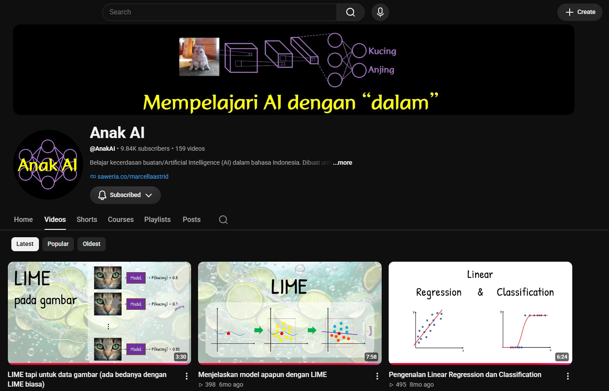
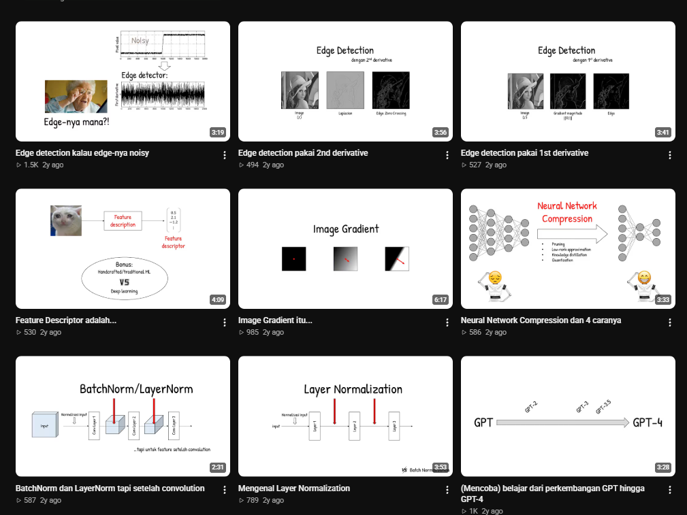

Start with the business question
Understand the decision, stakeholder, and operational context before choosing metrics or building a dashboard.
OPEN TO DATA ANALYST & BI DEVELOPER ROLES
Data Analyst & BI Developer
Indonesia·
Bridging business objectives and data-driven decisions through reliable, end-to-end data pipelines, analytics solutions, and everything in between. Ensuring a consistent "garbage in, garbage out" prevention mindset by building and maintaining data quality and reliability. Providing the backbone through the often-overlooked, day-to-day work, getting the little things right is what makes big decisions count.
01 / ABOUT
I help turn complex datasets into reliable information that people can use to understand performance, identify opportunities, and make better decisions.
i have quite unique background, my major was from physics education, i have worked as teacher, admin, and sales team. Curiosity brought me to the world of data and i'm going to stay in this field cause of how fun and challenging this field was. you might think this is disadvantage but i use this range of field as my companion skills while traversing and exploring the world of data science.
My professional experience came from supporting FMCG business operations through outlet and distributor reporting and analysis, Revenue and list-price validation, merchandising, incentive processes. I work across reporting, analysis, data validation, dashboard development, and workflow improvement, partnering with different teams to connect data with operational and business needs.
Outside of work, i contribute as a volunteer video editor for Anak AI, an educational YouTube channel focused on explaining technical Artificial Intelligence concepts in an accessible and easy-to-understand format, managed by Marcella Astrid Ph.d, an AI consultant and researcher working internationally
02 / HOW I WORK
The tools matter, but the thinking behind the work matters more.
Understand the decision, stakeholder, and operational context before choosing metrics or building a dashboard.
Inspect sources, validate assumptions, data sanity checks, and reconcile outputs before communicating results.
Present findings clearly, explain their implications, and help stakeholders move from information to action.
03 / TOOLKIT
A practical toolkit across analytics, BI development, data preparation, and engineering.
Build decision-support reports, define metrics, and present operational performance.
Explore, clean, transform, and analyze structured and semi-structured data.
Work with layered data architectures, streaming ingestion, and analytical storage.
Apply disciplined data workflows and communicate analytical findings.
04 / SELECTED WORK
A selection of professional and independent work across business intelligence, analytics, and data engineering.
04 / CREDENTIALS & LEARNING
Professional certifications, technical training, and continuous development.
Microsoft · August 2025
Credential ID: 8D78F9E8D31F63F7
Certification number: 8C0FD4-FDEA4R
Earned: 15 August 2025
Expires: 16 August 2027
Google · Coursera
Data preparation, analysis, visualization, spreadsheets, SQL, and analytical problem-solving.
Cisco Networking Academy
Python fundamentals, programming logic, data structures, and problem-solving.
DigitalSkola Bootcamp · Jan 2022
Data analytics training and practical analytical skills.
DQLab & Sololearn
SQL fundamentals, Python programming, and data analysis foundations.
05 / OUTSIDE WORK
Contributing to communities, sharing knowledge, and exploring technology beyond professional work.
Anak AI is an Indonesian-language YouTube channel founded by Marcela Astrid, PhD ↗, an AI consultant and researcher with international academic and professional experience. The channel aims to make Artificial Intelligence and Machine Learning more accessible to Indonesian audiences through engaging explanations, visualizations, memes, and humor. I contribute as a volunteer video editor, helping transform technical concepts into accessible and engaging educational content.
Explore Anak AI channel ↗

06 / GET IN TOUCH